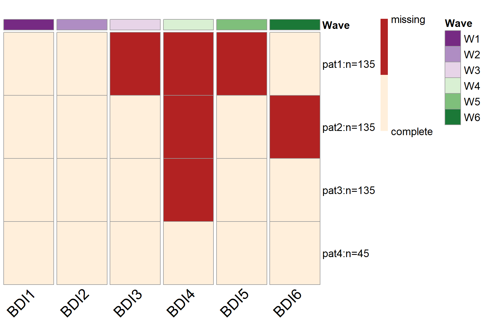

Visualize the Results
Yi Feng & Gregory R. Hancock
PlotPM.RmdVisualize the Results
To visualize the missing data patterns of the optimal PHPM design, we can use the plotPM() function with the simPM() object. It will plot the missing data pattern matrix so people can have a more intuitive understanding of the optimal design that was selected.
Examples
Below is an example of the plot showing the missing data patterns for a wave-level PHPM design. It corresponds to the missing data pattern matrix in the output summary. By default, the plot will use red ("firebrick") to indicate missingness and beige ("antiquewhite1") to indicate complete data. In the plot, each row represents a unique missing data pattern. Each column represents an observed variable. The number of participants assigned to each missing data pattern is labeled by the missing data pattern.

We can change the color scheme of the plot by setting col =.

We can also turn off the wave label by using the labels = FALSE argument.

Below is an example of the plot showing the missing data patterns for a balanced item-level PHPM design. If we do not wish to include the number of participants assigned to each missing data pattern, we can turn it off by setting row.names = FALSE.

Below is an example of the plot showing the missing data patterns for an imbalanced item-level PHPM design (with forward assembly).
